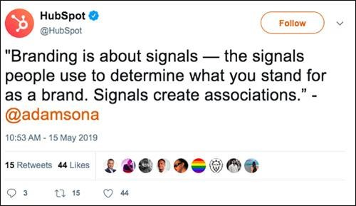
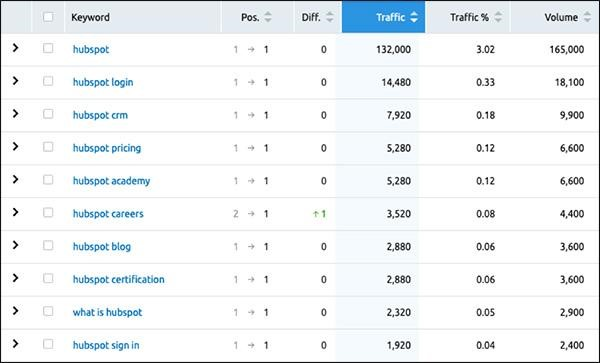

A “brand” is notoriously difficult to define. We define it as “the intangible sum of a product’s attributes.” Of course, a brand can offer a service rather than a product, so even this isn’t entirely accurate.
Google’s idea of a brand is perhaps less nebulous, as Google does not have this intangible conception of a “brand.” Instead, the search engine sees a variety of indirect factors that contribute to what we consider a brand — real business signals, branded searches, brand mentions, etc.
Brand Signals
You may have heard of or gotten caught up in the recent discussions of E-A-T (expertise, authoritativeness, trustworthiness) in the SEO-sphere. Opinions on the importance or validity of E-A-T aside, an oft-recommended part of the remedy has been to bolster brand or real business signals.
If you’re wondering what exactly these signals might be, here’s a quick guide:
- ● A real address on your website (footer or About page)
- ○ Tip: Connect this to a Google My Business account for your company, even if you’re not a typical “local” business
- ● A phone number as a contact point on your site
- ○ Preferably a local number rather than an 800 or call-tracking number
- ● A strong About page with employee information and detailed company information
- ○ Reference competitors or others in your industry to assess an average of how much (and what quality) content is on their About pages—and aim to make yours even better
- ● Public reviews and company information on applicable sites (Glassdoor, Trustpilot, Yelp, etc.)
- ○ The higher ratings, the number of reviews, and sentiment of what’s expressed may all be factors that Google partly relies on
- ● Active social media presence
- ○ At least focus on the big players in social media today: Instagram, Facebook, and Twitter (maybe TikTok if you’re feeling hip and trendy)
Number of Branded Searches
The number of Google searches that occur with your brand name is a clear signal to Google that you exist outside of just the search landscape and that you’re a real brand that users are interested in.
It may not seem like radio ads, billboards, TV, or other traditional advertising methods could have an impact on organic search rankings, but if the people seeing these ads are then searching for your brand name, won’t that bolster your brand presence?
The answer appears to be yes.
This is a small component of search rankings, but every piece of the puzzle matters in SEO. If you’re looking to get a leg up on the competition, don’t discount the potential for completely offline marketing efforts to have a joint impact on organic search as well.
You can use tools like SEMrush or Ahrefs to estimate the number of brand searches you and/or competitors are currently receiving.
For example, HubSpot receives hundreds of thousands of branded search mentions each month. The sheer volume of searches (and positive sentiment) signals to Google the strength of the HubSpot brand. Check out just a few of the various branded searches that HubSpot receives each month:
Online Brand Mentions (Including Nofollow Links)
Online brand mentions without links back to your website (also known as co-citations) are a powerful indication of legitimacy to Google.
Although they don’t carry the “link juice” that you’d ideally obtain, they act similarly to local citations for local businesses — the more of them you have, the more you demonstrate to Google that you’re a real business with a trusted, known, or respected brand.
Here’s my favorite part: The part where I get to tell you why nofollow links actually do matter. Nofollow links are often thought of as a wash, as they don’t carry PageRank, the quintessential point of a link.
So why would you care about them?
Studies have demonstrated the general and objective ranking value of nofollow links as a whole. Besides that, nofollow links with branded anchor texts are powerful because of the aforementioned dual reason of being a co-citation.
Can a Strong Brand be Considered a Ranking Factor?
Your brand is not a direct ranking factor.
Again, search engines don’t know anything directly about your brand. To Google, your brand is essentially an accumulation of various factors equaling what we consider a brand or branding.
With that being said, users tend to prefer brands; they’re more likely to click on a link from a brand that they know and trust. Click-through rates (CTRs) are not a direct ranking factor, but we can say with fair confidence that user behavior signals do have an impact on organic rankings.
So although it’s not a direct ranking factor, a strong brand absolutely has a tangible impact on SEO and organic rankings.
Steps You Can Take to Improve Your Brand for Google Search
Follow the advice outlined here to improve your brand business signals. Be actively engaged on your company’s social media profiles. Consider traditional advertising to help spread your name, as it could have a tangible effect on SEO. Conduct PR efforts to secure co-citations and brand mentions online (remember, these don’t even need to be actual links!).
But most importantly: Do what would improve your brand and make customers love it. This will translate over to SEO eventually, but more importantly—it’ll improve what your prospective customers think of your brand. Even if you earn the top spot for every query you want, if people hate your brand, they won’t click on your website in their search results.
And if they don’t click on your website, they won’t buy your product or service. All of your efforts to work with search engines will have been a waste of time.
So, focus on the customer first and Google second!